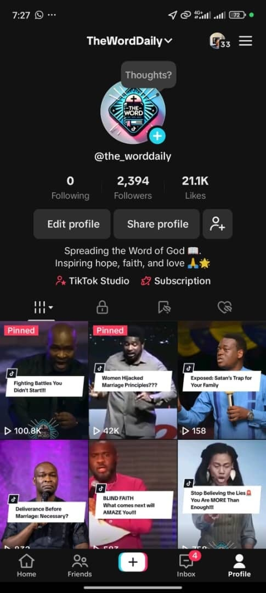
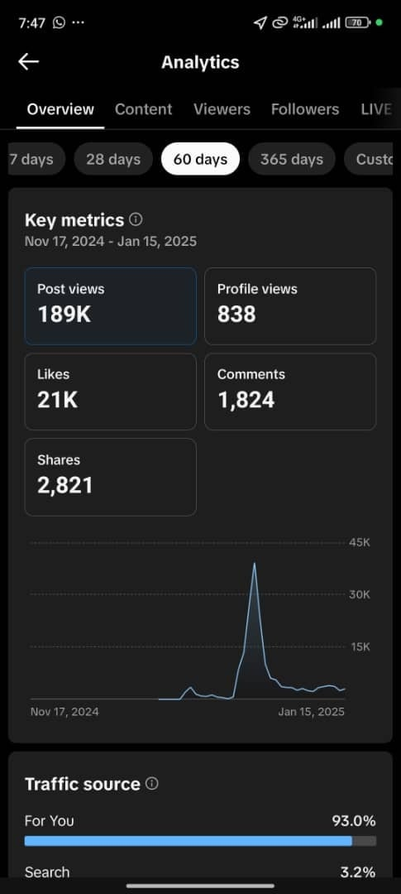

Canva
Canva CapCut
CapCut InShot
InShot Instagram Edits
Instagram Edits HubSpot
HubSpot Metricool
Metricool Buffer
Buffer Figma
Figma Notion
Notion


 Facebook
Facebook LinkedIn
LinkedIn TikTok
TikTok01
THEWORDDAILY · TIKTOK
The right people found the page.
I focused on Christian and motivational audiences, handled comments and DMs, and tested hooks that gave people a reason to respond.
Result
The audience grew by 8,500% in 30 days.
What I handled
Audience research, engagement, inbox management and content hooks.

